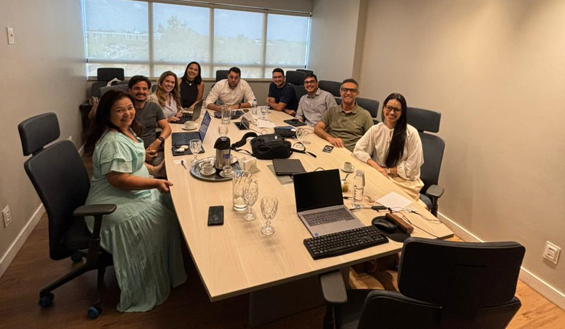

Newsletter
Edição nº 2 | 10 de setembro de 2026
Agenda institucional | 2 a 4 de setembro
| |
| ● CCHA avança em tratativas na CCAF | |
|
O Conselho Curador dos Honorários Advocatícios (CCHA) participou, no dia 2 de setembro, de nova reunião na Câmara de Mediação e de Conciliação da Administração Pública Federal (CCAF), dando continuidade às tratativas já em andamento após a admissibilidade do processo. O encontro reforçou a agenda de diálogo institucional e a busca por encaminhamentos consensuais para a matéria em discussão.
| |
● CCHA inicia diálogo com a Caixa em busca de benefícios para as carreiras | |
|
Ainda no dia 2 de setembro, representantes do CCHA se reuniram com a Vice-Presidência da Caixa Econômica Federal para iniciar uma interlocução institucional voltada à construção de possíveis parcerias. A agenda teve como foco a identificação de produtos, serviços e condições que possam gerar vantagens aos beneficiários das carreiras da advocacia pública federal no futuro. O encontro abre uma nova frente de relacionamento institucional do Conselho, voltada à busca de oportunidades que possam resultar em benefícios aos seus representados. As tratativas ainda estão em estágio inicial.
| |
| ● CCHA acompanha melhorias tecnológicas e nova etapa do Portal da Transparência | |
 | |
|
No dia 3 de setembro, o CCHA realizou reunião com a Cast Software para acompanhar frentes estratégicas de tecnologia e gestão. Entre os temas discutidos estiveram a preparação dos sistemas para a folha de pagamento, a Reunião de Acompanhamento Contratual (RAC), melhorias no sistema de gestão interna do Conselho e o desenvolvimento da segunda etapa do Portal da Transparência. As iniciativas integram o processo contínuo de modernização da estrutura tecnológica do CCHA, com foco em eficiência operacional, segurança dos processos e ampliação dos instrumentos de transparência.
| |
| O e-mail oficial de atendimento do Conselho é atendimento@cchadv.com | |
Newsletter institucional |